Rimsø
Feinkörniger, geschichteter bläulicher Granit mit rotem Korn
Höhe ü. Fundament: 226 cm
Breite am Fuß: 120 cm
an der Spitze: 53 cm
Dicke zw. : 12 und 26 cm
Runenhöhe: 14 / 18 / 19,5 cm
Runenstein :
Thori, Bruder des Enrathi, errichtete diesen Stein zum Andenken an seine Mutter und ... der Tod ist das Schlimmste (Unglück) für einen Sohn.

68 - Rimsø - Letztes Update 23.09.2025
Listennummer : DR 114 / DK MJy 41
Navidaten: 56.47840 10.79466 oder: Toresvej 4, 8500 Grenå
Transliteration:
Seite A: þuriR : bruþiR : ainraþa
Side B: rai=sþi : stain : þąnsi : | uft : muþur : sina : auk :
Side C: ... ku...
Seite B: ... -auþi : sam : uarst : mak
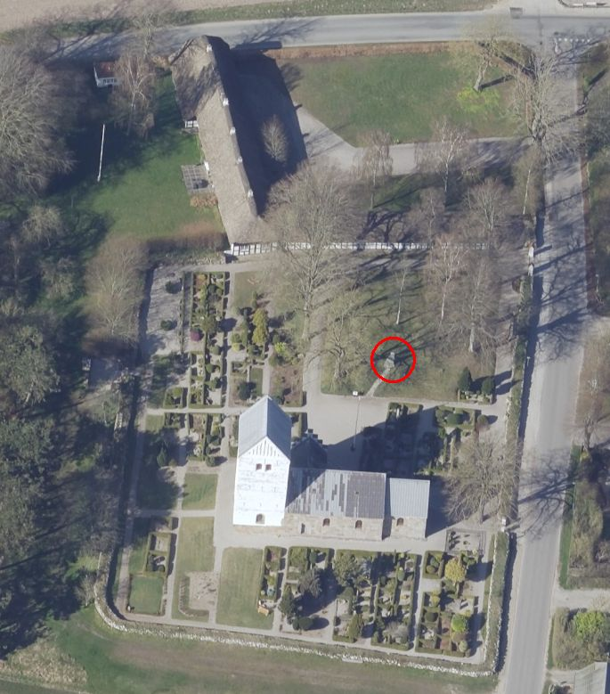
Dies ist ein Luftfoto vom 17.04.2023 von Skråfoto, das die Kirche von Rimsø mit dem Grabhügel im Kirchhof und dem dazwischen aufgestellten Runenstein zeigt. Dahinter liegt der Pfarrhof - der älteste in ganz Dänemark - näheres siehe unten. Skråfoto ist eine Webanwendung, die von Klimadatastyrelsen weltweit kostenlos bereitgestellt wird - Freie Nutzung unter Beachtung der Lizenz: CC BY 4.0. Die Aufnahmen werden alle zwei Jahre erneuert und neben einer Senkrechtaufnahme wird ein Schrägbild aus jeder Himmelsrichtung angeboten, das man über eine Adresssuche aufrufen kann.
Den Standort des Runensteins habe ich rot eingekreist. Screenshot vom 11.12.2024.
Der Runenstein wurde als Grundstein an der zugemauerten Südtür der Rimsø Kirche entdeckt. Aufgrund dieser Fundsituation war nur etwas von der Inschrift der Schmalseite und ein Teil der Inschrift der angrenzenden Breitsteite erkennbar. Bei der Erbauung der romanischen Granitquader Kirche um 1150 in Rimsø hat man den großen, schweren Stein aber wohl kaum von weit hergeholt, weshalb er vermutlich ursprünglich am Fuße des 24 m x 1,5 m großen Grabhügels, der sich unmittelbar neben der Kirche befindet, gestanden hat.
Ob eine Verbindung zwischen dem Runenstein und dem Grabhügel besteht, kann aber erst eine Untersuchung des Hügels klären, die aber bislang (meines Wissens) immer noch nicht erfolgte.
Der Runenstein wird von den Runologen in die Zeit 900-1020 datiert. Die Inschrift verläuft wie hier dargestellt:
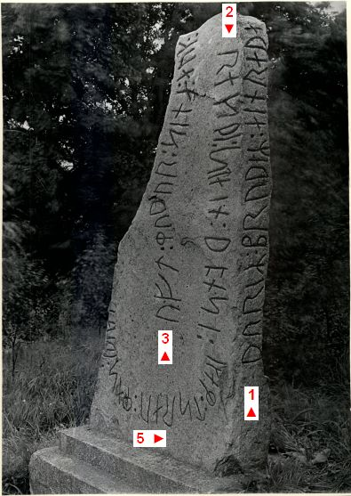
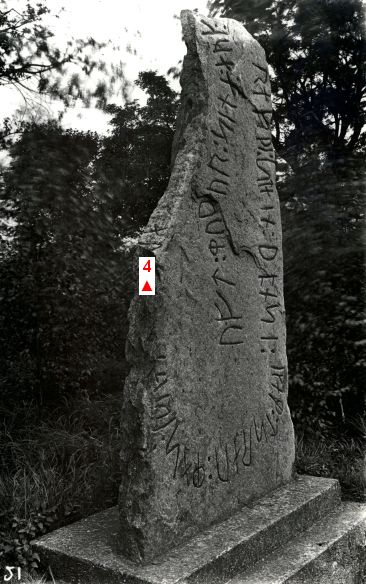
Bildquelle: Digitale Datenbank des Nationalmuseums Kopenhagen - Lizenz: CC-BY-SADie erste Erwähnung zum Rimsø Runenstein geht wohl auf Laurits Schebye Vedel Simonsen (*20.12.1780 - 12.07.1858, Historiker - link-LIVES)
 Bildquelle:
Glavendrup Flyer - Lizenz:
Public Domain - nach einem
Gemälde von
1812 von
S. L. Lange -
Det Kgl. Biblioteks billedsamling
Bildquelle:
Glavendrup Flyer - Lizenz:
Public Domain - nach einem
Gemälde von
1812 von
S. L. Lange -
Det Kgl. Biblioteks billedsamling
zurück. Im Oktober 1814 teilte er in einer Eingabe an die "Kongelige Commission til Oldsagers Opbevaring" (Die Königliche Kommission zur Erhaltung der Altertümer wurde am 22. Mai 1807 gegründet und sollte die Erhaltung der wichtigsten antiken Denkmäler sicherstellen und sich um die archäologischen Funde kümmern.) mit: ... dass er in der Grafschaft Scheel eine schmale Platte gefunden habe, die 3 Ellen lang und 1 Viertel dick und in der Rimsø Kirchenmauer eingemauert gewesen sei. In der Mauer würden vermutlich auch die fehlenden Teile noch hier und da sitzen, könnten aber nicht entdeckt werden. Am Rand der Platte seien richtige Runen zu lesen, aber das unterste Stück sei weggehauen und mit Kalk ausgebessert, so dass in der Inschrift kein Sinn erkennbar wäre. Schreiben heute aufbewahrt im: "Antikvarisk-Topografisk Arkiv", Nationalmuseum Kopenhagen.
18 Jahre später - im Jahre 1832 - berichtet Pastor Hans Erik Colding (*30.06.1793 - 27.05.1857 - link-LIVES)
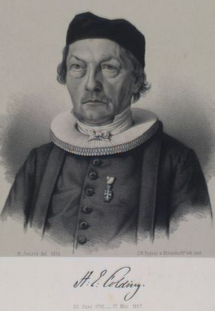
Bildquelle: Det Kgl. Biblioteks billedsamling - Lizenz: Public Domain - Zeichnung von 1857 von Isac Wilhelm (*23.6.1815 - 21.12.1893)aus Ørsted gegenüber Carl Christian Rafn (*16.01.1795 - 20.10.1864, Altertumsforscher - link LIVES - Bestattungsprotokoll) - Interessanter Podcast vom 16.01.2020 beim WDR zu dessen 225. Geburtstag hier.
 Bildquelle: Zeichner
Magnus Petersen -
Det Kgl. Biblioteks
Bildquelle: Zeichner
Magnus Petersen -
Det Kgl. Biblioteks
billedsamling - Lizenz: Public Domain
von dem Runenstein und hat ihm dazu eine Aufzeichnung von Pastor David Seidelin (*30.05.1793 - 08.03.1837, Pfarrer in Rimsø und Kastbjerg seit 1822) übersandt. Damals befand sich der Runenstein etwa in der Mitte der Südseite der Rimsø Kirche. Die Unterseite des Steins lag in gerader Linie mit der Erdoberfläche und sichtbar war nur ein Teil der Inschrift auf der schmalen Seite, sowie einige Runen auf der angrenzenden Breitseite.
Finnur Magnusson (dänisch auch Finn Magnusen; * 27. August 1781 in Skálholt/Island; 24. Dezember 1847 in Kopenhagen, isländischer Philologe und Archivar - link-LIVES)
 Bildquelle:
Wikimedia - Lizenz:
Public Domain
Bildquelle:
Wikimedia - Lizenz:
Public Domain
berichtet in seinem Buch "Runamo og Runerne, 1841" auf S. 552 über den Neufund. Er führt aus, dass Cap. August Baggesen (Frederik Ludvig August Haller von Baggesen, *14.08.1795 - 18.04.1865, Biograph und Generalmajor - link-LIVES - Begräbnisprotokoll)
 Bildquelle:
Museen Nord - Lizenz:
CC BY-SA 4.0 /
Foto zw. 1854 und 1863
entstanden -
Digitale
Sammlung der Königlichen
Bibliothek zu
Kopenhagen
Bildquelle:
Museen Nord - Lizenz:
CC BY-SA 4.0 /
Foto zw. 1854 und 1863
entstanden -
Digitale
Sammlung der Königlichen
Bibliothek zu
Kopenhagen
ihn in der Kirchenmauer eingesetzt fand (1837) und dieser einen Bericht mit einer Zeichnung abgab. Dieser Bericht sei leider im Laufe der Jahre verloren gegangen, wie diese beiden Quellen berichten: Ludv. F. A. Wimmer, De danske runemindesmærker undersøgte og tolkede af Ludv. F. A. Wimmer, Andet Bind, Runestenene i Jylland og på øerne. 1899-1901 - S. 66 - 1. Zeile / Lis Jacobsen/Erik Moltke - Danmarks Runeindskrifter - 1942, S. 151/152, Nr. 114. Finnur Magnusson deutete die Inschrift aber anhand der Zeichnung:
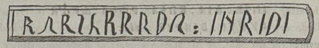
mit "Rurik (für oder an seine) Braut Ingrid".
Im Rahmen meines Kopenhagen Studien Tripps im September 2022 fand ich aber in der Königlichen Bibliothek in Kopenhagen einen von "Aug. Baggesen" unterschriebenen zweiseitigen, undatierten Bericht im Nachlass von von P. G. Thorsen - Pappschachtel Nr. 6 - siehe unten.

Es scheint so, als ob zumindest die erste Seite fehlt, weil der Bericht mit "2)" zu dem Runenstein von Rimsø beginnt. Auf der Rückseite geht der Bericht mit "3)" zum Runenstein von Stenalt (...fand ich nicht... - erst 1913 wiederentdeckt!) und "4)" zum Runenstein von Hobro weiter und endet sicherlich mit der o.a. Unterschrift, die allerdings ausgeschnitten und aufgeklebt wurde. Es ist zu vermuten, dass sie von einem Umschlag oder Anschreiben stammt.


Das muss dann wohl der angeblich verschwundene Bericht sein! Finnur Magnusson schreibt nämlich auch in seinem Werk "Runamo og Runerne, 1841" auf der S. 553 in der Fußzeile (**), dass Cap. August Baggesen auf seiner Reise noch Stenalt und Hobro besuchte. Die erwähnte Zeichnung von ihm zum Runenstein von Rimsø fand ich aber leider nicht. P. G. Thorsen zitiert in seinem "Band II - Text", Nr. 46, S. 131, auch aus dessen Bericht und das was er dort schreibt deckt sich mit dem Inhalt des von mir gefundenen Berichts!
Die Altertümerkommission schickte ihrerseits im Jahre 1857 Rasmus Henrik Kruse (*07.08.1796 - 30.05.1877, Landschaftsmaler - link-LIVES - Heirat 21.12.1851)
 Bildquelle:
Det Kgl. Biblioteks billedsamling - Lizenz:
Public Domain
Bildquelle:
Det Kgl. Biblioteks billedsamling - Lizenz:
Public Domain
zur Inspektion des Runensteins vor Ort. Er hat seine Aufzeichnungen zu dem Runenstein in seiner Abhandlung "Nørre Jyllands Mærkværdigheder i det 19. Aarh. Hs. Bd 1-2 (med) Tillæg 1-2" verfasst. Genaugenommen im Ergänzungsband Tillæg 2, 1857, S. 6-9 mit der Tafel 2.
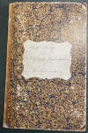 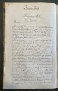 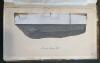 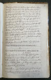 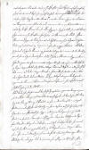 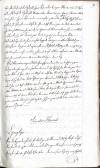


Dieses Werk wird heute im Nationalmuseum in Kopenhagen, Antikvarisk-Topografisk Arkiv, aufbewahrt. Dort durfte ich am Dienstag, 27.09.2022, zu Gast sein und die vier Bände in Händen halten und fotografieren. Die S. 8 und 9 wurden mir freundlicherweise vom Archiv auf Anfrage nachgereicht, da ich sie offenbar vergessen hatte zu fotografieren. Mange tak Dánial!
Im Jahre 1875 wurde der riesige Stein dann auf Bestreben von Ernst August Pyrmont Jacobsen von Benzon (*25.07.1827 - 10.07.1888), dem Gutsherrn von Sostrup zw. 1840 und 1888 (Sostrup, Maria Hjerte Engen 2, 8500 Grenaa - link-LIVES),
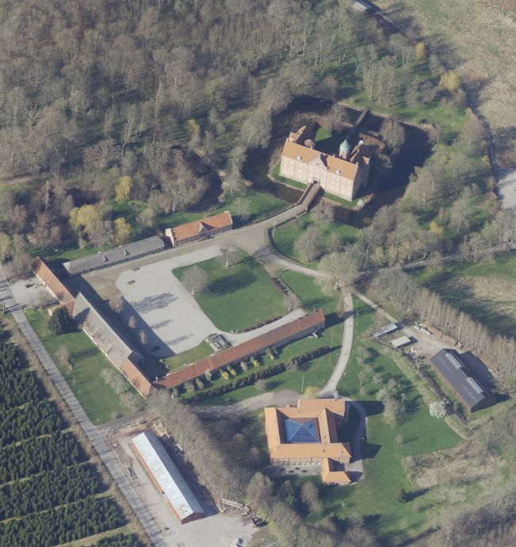
Bildquelle: Skraafoto - Aufnahme vom 17.04.2023 - Screenshot vom 11.12.2024 - Lizenz: Public Domainherausgenommen, was er Rasmus Henrik Kruses schon bei dessen Besuch 1857 zugesagt hatte. Er wurde nun außerhalb der Kirche abgelegt, bis er 1889 auf dem Grabhügel, genau südlich der Kirche, errichtet wurde. Gutsherr von Benzon, der reges Interesse an der Geschichte des Runensteins zeigte, konnte dies leider nicht mehr miterleben, da er schon 1888 verstarb.
Mit Datum vom 31.03.1873 schreibt eben dieser Gutsherr von Benzon einen dreiseitigen Brief an Professor P. G. Thorsen und berichtet darin auch von dem Besuch von Rasmus Henrik Kruse im Jahr 1857. Den Brief fand ich bei meinem Besuch am 27.09.2022 in der Hinterlassenschaft von P. G. Thorsen - Pappschachtel Nr. 6 - in der Königlichen Bibliothek in Kopenhagen - näheres siehe unten. Es müsste aber noch einen weiteren Brief mit dem Datum 23.08.1875 geben, in dem er von der Herausnahme des Runensteins berichtet, von dem ich leider nichts gesehen habe.


P. G. Thorsen macht in seinem Band II - Text auf der S. 132 auch Ausführungen zu dem Briefverkehr.
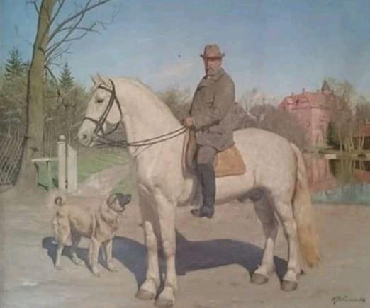
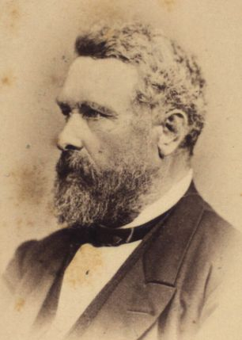
Ernst August Pyrmont Jacobsen von Benzon hoch zu Pferd mit dem Herrenhof Sostrup im Hintergrund -Bildquelle: über www.geni.com / Portrait um 1865 - Det Kgl. Biblioteks billedsamling - Lizenz jeweils: Public Domain
Für Gutsherr von Benzon wurde knapp 1,3 km südlich des Herrenhof Sostrup, an der Kreuzung der Straßen "Hestehavevej/Grenaavej", ein Gedenkstein errichtet - Geodaten: 56.4902359936243, 10.826435764897852
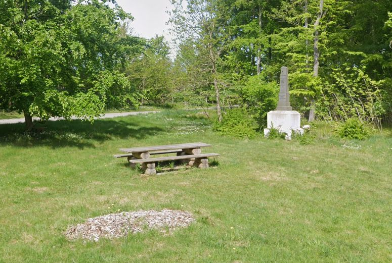
Bildquelle: Google Street View - Screenshot vom 11.12.2024Auf dem Stein findet sich die Inschrift:
E.A.P.Benzon
Kammerherre
Hofjægermester
Ridder af Dannebrog
født 23
Juli 1827
død 10 Juli 1888
Rejst i taknemmelig
erindring
af godsets beboere
Übersetzung: "E.A.P.Benzon / Kammerherr, Hofjägermeister, Ritter des Dannebrog-Ordens, geboren 23.Juli 1827 - verstorben 10. Juli 1888, In dankbarer Erinnerung von den Einwohnern des Gutshofes errichtet"
Der dänische Prof. P. G. Thorsen (*07.08.1811 - 06.05.1883, Bibliothekar, Runenforscher und Historiker - link-LIVES - Artikel: Levnedsbeskrivelser af de ved Københavns Universitets Firehundredaarsfest promoverede Doktorer, Illustreret Tidende 1882, Nr. 1235 - vom 27.05.1833 / Grabstein in Varde / Eheschließung in Varde am 19. August 1848)
 Fotografie
zw. 1863-1900 von
Fotograf Budtz Müller (*26.12.1837 -
30.12.1884) -
Det Kgl. Biblioteks billedsamling - Lizenz:
Public Domain
Fotografie
zw. 1863-1900 von
Fotograf Budtz Müller (*26.12.1837 -
30.12.1884) -
Det Kgl. Biblioteks billedsamling - Lizenz:
Public Domain
beschäftigte sich mit dem Runenstein ab 1870. Er wunderte sich vor allem, dass dieser große Stein nicht längst als Runenstein erkannt wurde. Der für ihn tätige Zeichner Prof. Julius Magnus Petersen (*04.09.1827 - 31.01.1917, Archäologischer Zeichner und Restaurator - link-LIVES - Bestattungsprotokoll)
 Bildquelle: Fotografie
von 1903 von Fotograf Marius Christensen
(*24.06.1874 -
25.06.1907) -
Det Kgl. Biblioteks billedsamling - Lizenz:
Public Domain
Bildquelle: Fotografie
von 1903 von Fotograf Marius Christensen
(*24.06.1874 -
25.06.1907) -
Det Kgl. Biblioteks billedsamling - Lizenz:
Public Domain
fertigte diese Zeichnung an, die in dem Runenwerk von P. G. Thorsen, De danske runemindesmærker: afd.:1,2. Jyllands runemindesmærker, Afbildninger og Text, I. Afbildninger - Nr. 46, im Jahre 1879 veröffentlicht wurde.
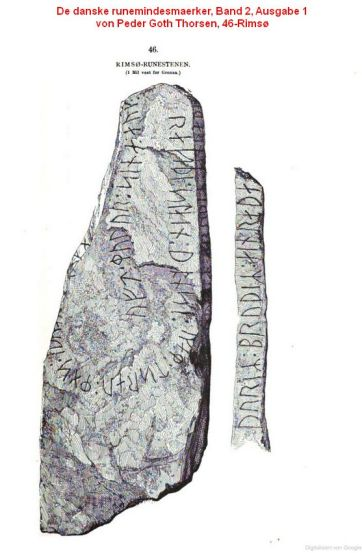
In seinem ein Jahr später - 1880 - erschienen "Band II - Text" veröffentlichte er seine Studien zu diesem Runenstein auf den S. 131-34.
Darin führt er aus, dass er am 31.03.1873 bereitwillig Auskünfte verschiedener Art zu dem Runenstein von Ernst August Pyrmont Jacobsen von Benzon in Briefform erhalten hätte. In einem zweiten Schreiben von ihm vom 24.08.1875 erhielt er die Auskunft, dass der Runenstein tags zuvor von seiner Fundstelle herausgeholt wurde. Daraufhin entsandte er umgehend seinen Zeichner Magnus Petersen, der den Runenstein am 4./5. September 1875 begutachtete und zeichnete.
P. G. Thorsens Nachlass (Bezeichnet als: P. G. Thorsens optegnelser, tegninger m.m. vedrørende runer og runemindesmærker - überführt aus der Kopenhagener Universitätsbibliothek 1929 - Gemäß Ministerialschreiben vom 04.03.1929; früher benannt als Additamenta 612 kvart - findet sich heute in der Königlichen Bibliothek unter NKS 3296 (in mehreren einzelnen Pappschachteln). In der Pappschachtel Nr. 6 fand ich bei meinem Besuch am 27.09.2022 zahlreiche Briefe - von "Hammershøy / Baggesen / Benzon" - und in der Pappschachtel Nr. 17 die bereits o.a. Zeichnung von Magnus Petersen, die er auf den 4. - 5. September 1875 datiert hat.

In dessen Hinterlassenschaft konnte ich, wie gerade erst erwähnt, diesen zweiseitigen, undatierten Bericht auffinden. Er trägt eine Abschrift der Runen und eine Zeichnung des damals noch eingemauerten Runensteins, angefertigt von einem "Seminarist A Hammershøy i Forbindelse med V Treckner og V Fausbøll" (Übersetzung: Seminarist A. Hammershøy in Zusammenarbeit mit V. Treckner und V. Fausbøll) zeigt.


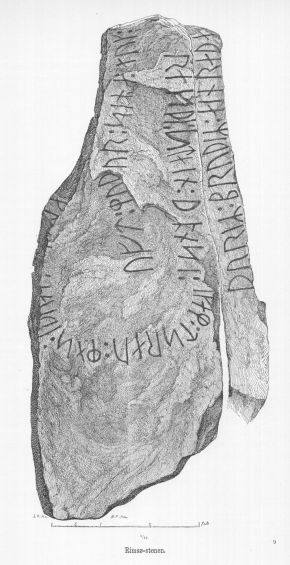
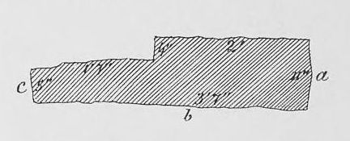
Diese Zeichnung stammt ebenfalls von Prof. Julius Magnus Petersen der am 2. August 1878 dazu nochmals vor Ort war. Sie wurde in dem Runenwerk von Prof. Ludv. F. A. Wimmer (*07.02.1839 - 29.04.1920, Philologe und Runenforscher - link-LIVES - Politiets registerblade - Bestattungsprotokoll)
 Bildquelle:
Fotografie zw. 1877-1900 von Fotograf Hansen & Weller
-
Det Kgl. Biblioteks billedsamling - Lizenz:
Public Domain
Bildquelle:
Fotografie zw. 1877-1900 von Fotograf Hansen & Weller
-
Det Kgl. Biblioteks billedsamling - Lizenz:
Public Domain
De danske runemindesmærker undersøgte og tolkede af Ludv. F. A. Wimmer, Andet Bind, Runestenene i Jylland og på øerne. 1899-1901 - Nr. 9 ab der S. 65ff. - veröffentlicht. Ich habe diese Zeichnung aus dem in meinem Besitz befindlichen Exemplar eingescannt. Prof. Ludv. F. A. Wimmer war selbst zweimal - 02.08.1878 und am 14.07.1882 - vor Ort um diesen Runenstein zu untersuchen, also noch bevor dieser vor dem Grabhügel - am 02.08.1889 - von etlichen Männern aufgestellt wurde. Diese kräftezehrende Arbeit war vom Lehrer Jacob Wilken Nissen aus Randers (*02.10.1835 - im Geburtsregister eingetragen als Jacob Wilkesen Nissen - 29.10.1902, Lehrer in Ramten 1859 bis 1895 - link-LIVES)
 Bildquelle:
Det Kgl. Biblioteks billedsamling (von mir zugeschnitten)
- Lizenz:
Public Domain
Bildquelle:
Det Kgl. Biblioteks billedsamling (von mir zugeschnitten)
- Lizenz:
Public Domain
geleitet worden. Der damalige Pfarrer in Rimsø, Frederik Wilhjelm (*08.10.1852 - 23.09.1938, Pfarrer in Rimsø ab 30.06.1884 bis 07.09.1891, danach in der Vorup Kirche bis 1916 - link-LIVES),
 Bildquelle:
Trøst-Hansens sognekort -
Nr.
3109 -
Lizenz:
Public Domain
Bildquelle:
Trøst-Hansens sognekort -
Nr.
3109 -
Lizenz:
Public Domain
berichtet darüber: "Der Runenstein lag neben der südlichen Kirchentür. Es wurde vom Gutsherrn Benzon von dort entfernt und nach mehreren Jahren des Liegens auf dem Friedhof, d. 2. August 1889, von der Direktion für die Erhaltung antiquarischer Denkmäler, auf dem Hügel errichtet worden. Am Morgen traf sich ein Großteil der Männer der Gemeinde, die ihn auf Rollen zum angedachten Standort zogen. Mittags stand er bereits, doch dann riss das Seil, das ihn festhielt, und er fiel wieder um. Erst am Abend stand er nach anstrengender Arbeit wieder aufrecht. In den Fuß, der am nächsten Tag gegossen wurde, wurde eine Geschichte in die Wand eingebaut. Lehrer Nissen aus Ramten leitete die Arbeit." - Quelle: Grenaa Egnsarkiv
Prof. Ludv. F. A. Wimmer hat seine jahrelangen Aufzeichnungen der
"Kgl.
Bibliotek" in
Kopenhagen überlassen. Ein
Verzeichnis darüber wurde 1915 in Buchform herausgegeben
-
In seinen Unterlagen in der Königlichen Bibliothek befinden sich unter "III - Originaltegninger af de danske Runemindesmærker, udførte paa Undersøgelsesrejserne af Magn. Petersen og kontrollerede paa Stedet af Ludv. Wimmer, samt Prøvetryk af de paa Grundlag af de nævnte Tegninger, Aftryk o. s. v. til De danske Runemindesmærker" udførte Afbildninger med Wimmers Rettelser"


seine Aufzeichnungen zu dem Runenstein von Rimsø unter der Nr. 26, woraus ich am 27.09.2022 diese Zeichnung von Prof. Julius Magnus Petersen - datiert auf den 02.08.1878 - und mehrere Arbeitsunterlagen von ihm - darüber ist ersichtlich wie er arbeitete - fotografieren durfte.
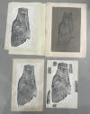 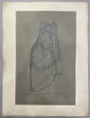 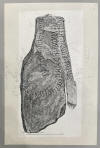 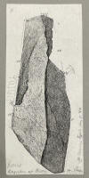


Magnus Petersen berichtet in seinen 1909 in Buchform erschienenen Erinnerungen - Minder fra min Virksomhed paa Arkæologiens Omraade fra 1845 til 1908 - auf der S. 245-246 über seine mehrfachen Besuche auf dem Herrenhof derer von Benzon. Er traf den Gutsbesitzer aber nur einmal 1873 an, weil der ansonsten immer mit seinem Schiff auf Sommerreise gewesen sei. Bei diesem Zusammentreffen hätte er ihm zugleich die Herausnahme des Runensteins zugesichert. Als er das nächste Mal 1887 vorbeigekommen sei, wäre dieser schon verstorben gewesen - hier irrt er wohl um ein Jahr, da alle sonstigen Quellen vom "10.07.1888" als dessen Todestag sprechen. Dessen Erbin, seine ältere Schwester, Fräulein Albertine von Benzon (*22 April 1824 - 22.01.1893), hätte ihn freundlich aufgenommen und er musste ihr versprechen, solange auf dem Gutshof zu bleiben, bis er die nahegelegenen Kirchen und Denkmäler studiert hätte.
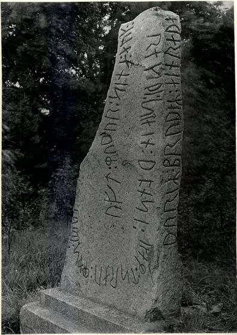
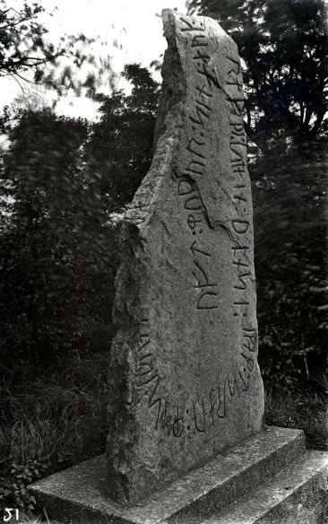
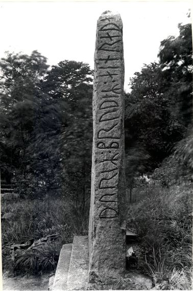
Digitale Datenbank des Nationalmuseums Kopenhagen - Lizenz: CC-BY-SA
Aufnahmen vom 04.08.1930 von Erik Moltke (*04.04.1901 - 19.10.1984, Runologe, Historiker - link-LIVES)
 Bildquelle: Scan von Buchumschlag "Runerne i Danmark og ders
oprindelse" - Erik Moltke - 1976 - Lizenz:
CC-BY-SA
Bildquelle: Scan von Buchumschlag "Runerne i Danmark og ders
oprindelse" - Erik Moltke - 1976 - Lizenz:
CC-BY-SA
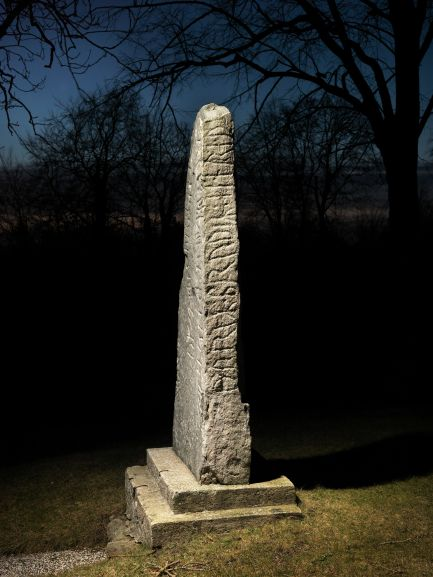
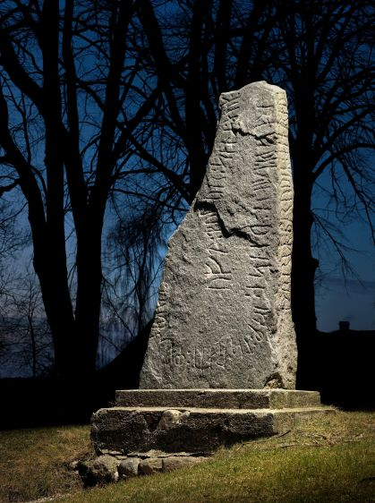
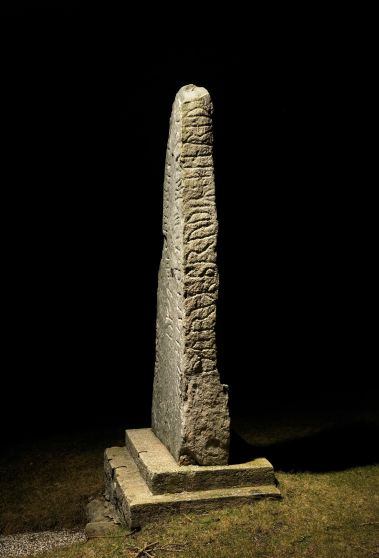
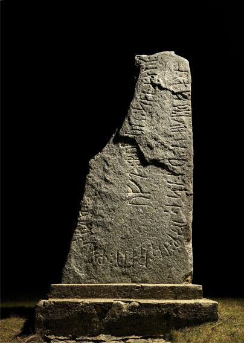
Im Vorfeld zu dem 2016 erschienenen Buch von Lisbeth M. Imer (*1973, Runologin am Nationalmuseum Kopenhagen) "Danmarks Runesten - en fortælling" reiste sie mit dem Fotografen Roberto Fortuna zur Bestandsaufnahme durch die Lande. Dieser hat die Runensteine mit Schräglicht aufgenommen und darüber wirklich herausragende Fotos erzielt. Diese Fotografien hier stammen vom 08.03.2012 - Digitale Datenbank des Nationalmuseums Kopenhagen - Lizenz: CC-BY-SA
Bislang hatte ich es nur einmal am Samstag, 10.08.1991, nach Rimsø geschafft (siehe Foto linker Frame), danach aber nochmals am Donnerstag, 25.08.2016, wobei ich folgende Fotos aufgenommen habe:
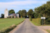 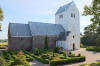 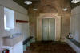 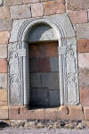 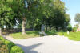 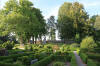 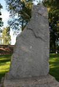 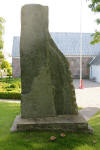 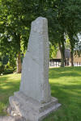 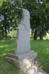 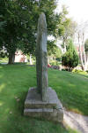 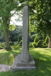 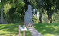 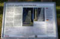


Den Flyer / Infotafel kann man sich übrigens über diesen Link herunterladen.
Im Rahmen meiner 2022er Jütland Wikinger Tour war ich nun am Mittwoch, 15.06.2022, vor Ort. Dabei habe ich zahlreiche Fotos - auch erstmals eines von oben über Smartphone am SelfieStick - gemacht.


Die Historie des "Præstegården" (Pfarrhofes) in Rimsø kann bis zum Jahr 1593 zurückverfolgt werden. Er ist darüber der älteste Pfarrhof in ganz Dänemark. In einem Balken über der Haupttür steht nämlich die Jahreszahl 1593, davor und danach ein S, bei dem es sich wohl um die Initialen des Erbauers handelt. Der damalige Pfarrer in Rimsø-Kastbjerg hieß Simon Poulsen Skoning (*? - 1626), und wahrscheinlich war er es, der das Pfarrhaus bauen ließ. Das Pfarrhaus bildete zuvor einen vierflügeligen geschlossenen Baukörper mit insgesamt 78 Eichenbalken. Im Jahr 1902 stürzte die alte Scheune ein und das an ihrer Stelle errichtete neue Scheunengebäude beherbergte nun auch den Kuhstall. Das Pfarrhaus wurde im Jahr 1959 unter Denkmalschutz gestellt und unmittelbar darauf grundlegend renoviert, nachdem man sich zuvor knapp gegen einen Abbruch entschieden hatte. Im Jahr 1982 leitete das Architekturbüro Vilhelmsen, Marxen und Bech-Jensen aus Århus eine sorgfältige Renovierung und Sanierung von Rimsø Præstegård, damit es den Anforderungen an eine moderne Residenz für den Priester gerecht werden konnte. Im Jahr 2012 wurden vor dem Haupteingang zwei neue Linden gepflanzt, da die alten und charakteristischen Linden morsch waren.
Die Informationen zu diesem Runenstein aus der dänischen Runendatenbank finden sich hier.
Der entsprechende Eintrag in "Fund og Fortidsminder" ist hier verlinkt. Darin ist inzwischen auch ein Zustandsbericht des Steinrestaurators Leif Vognsen aus dem Jahr 2018 eingebettet.
Über diesen Link finden sich zu dem Runenstein Informationen des Forschungsprojektes "Runes" der Akademie der Wissenschaften zu Göttingen.
Auf der Webseite von www.fortidsmindeguide.dk sind auch alle Infos zum Runenstein von Rimsø zusammengetragen.
Über diesen Link trifft man auf eine - in dänischer Sprache gehaltene - Abhandlung zur 3D Digitalisierung des Rimsø Runensteins - "Runesten som digital kulturarv - Tre eksempler fra Djursland. Thomas Eggers-Kaas, Museum Østjylland Årbog 2020".
Basierend auf diesem Artikel kann man sich über diese Webseite u.a. von dem Rimsø Runenstein ein 3D Modell als pdf-Datei downloaden und die dann in einem pdf-Reader anschauen, drehen, zoomen usw.
Allerdings
ist das Ganze etwas gewöhnungsbedürftig: Zunachst auf der Webseite eine der drei
Örtlichkeit auswählen, dann warten bis die PDF Reader Ansicht zu sehen ist - es
läuft ein Verlaufsbalken von links nach rechts und ein Blatt wird aufgerufen,
aber es tut sich dann nix, auch wenn es so aussieht als lädt da was. Deshalb
dann darüber auf "Download" über das sog. Hamburger Menü " "
gehen - die pdf-Datei "Rimsø.pdf" kann nun am eigenen PC
geöffnet werden.
"
gehen - die pdf-Datei "Rimsø.pdf" kann nun am eigenen PC
geöffnet werden.
Aber es passiert auch jetzt erst einmal nix. Man muss erst noch dem "Inhalt einmal vertrauen" und irgendwie öffnet sich dann plötzlich die Ansicht. Die kann man nun in der Pdf drehen und zoomen usw. - 26.07.2025 - Nachtrag: Das klappte heute bei mir so auch nicht, erst nach dem Abspeichern auf dem eigenen PC und dem Öffnen der Datei mit Adobe Acrobat klappte es erfreulicherweise wieder! :-)
Daneben kann man sich dort auch ein 3D Modell des Mygind Runensteins und des Sjellebro Maskensteins herunterladen.